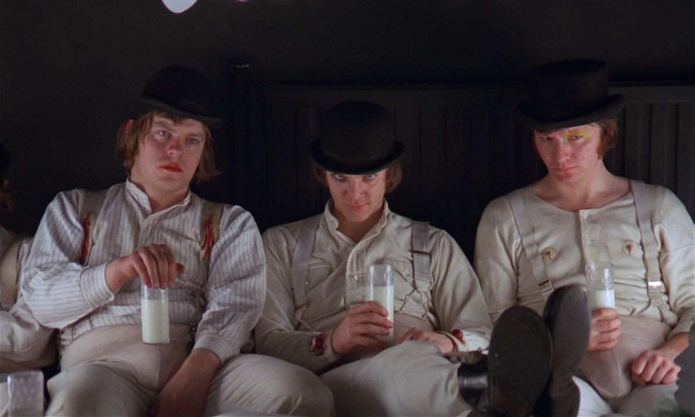
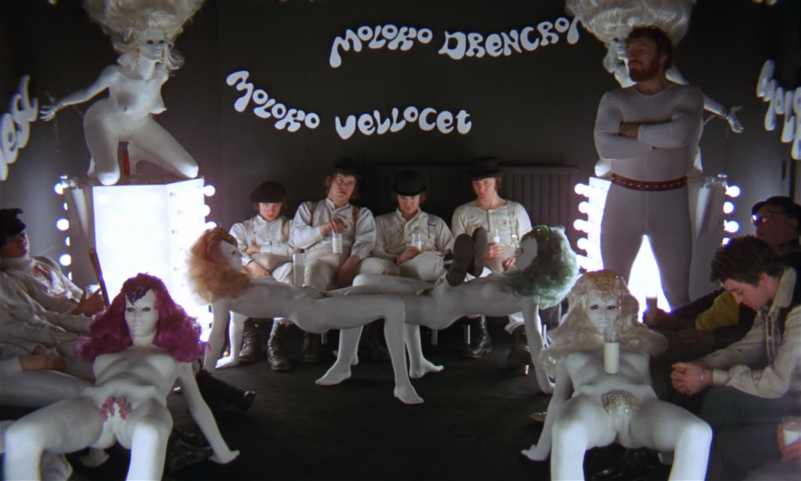
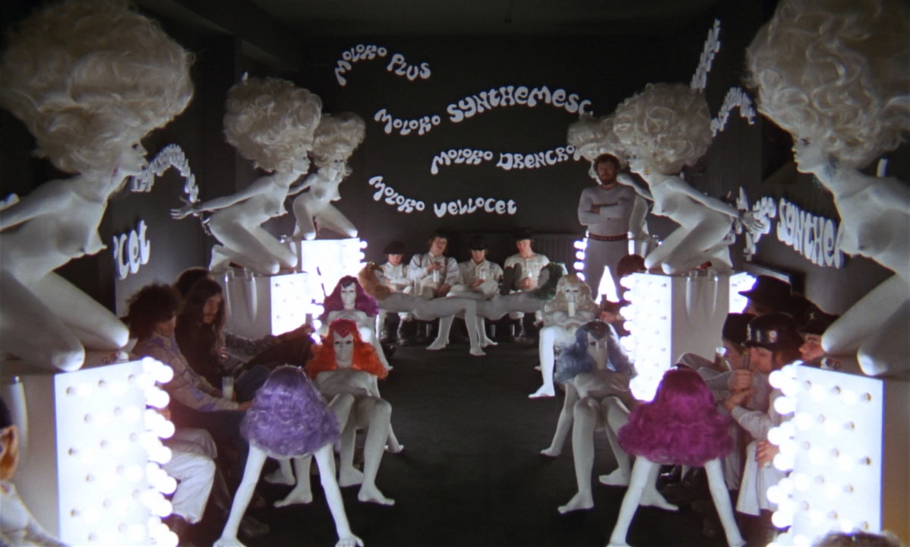
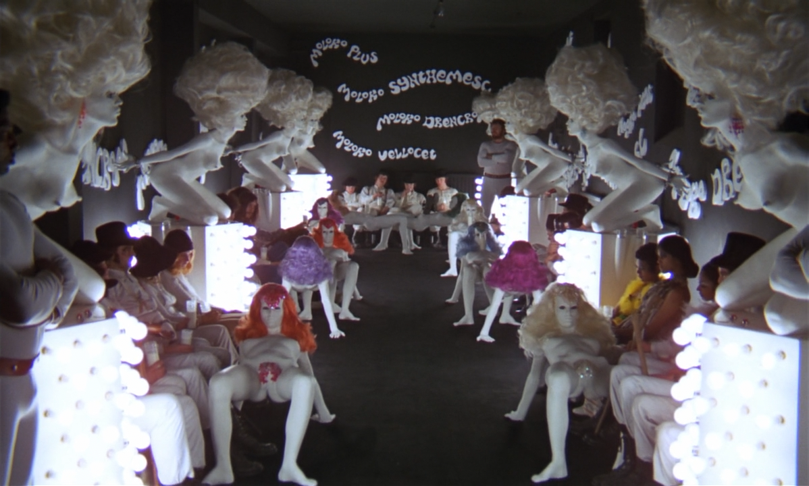
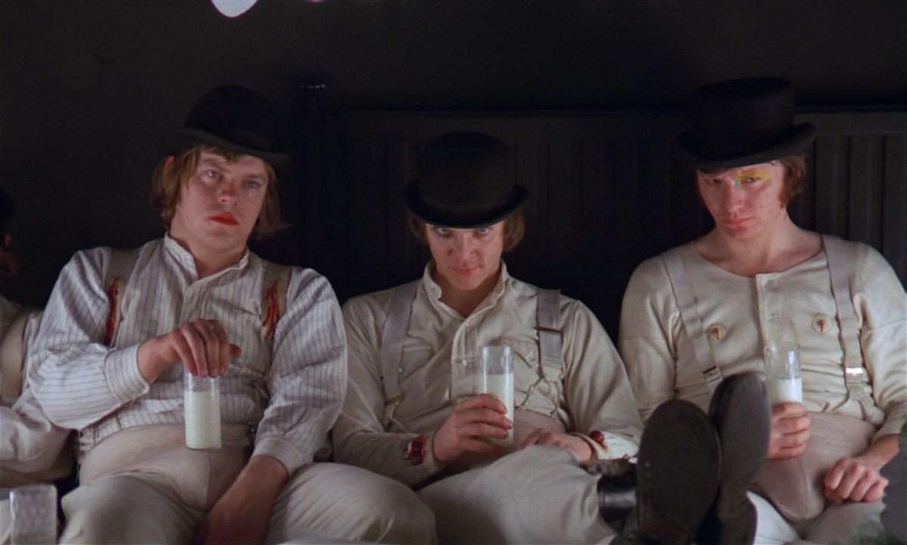
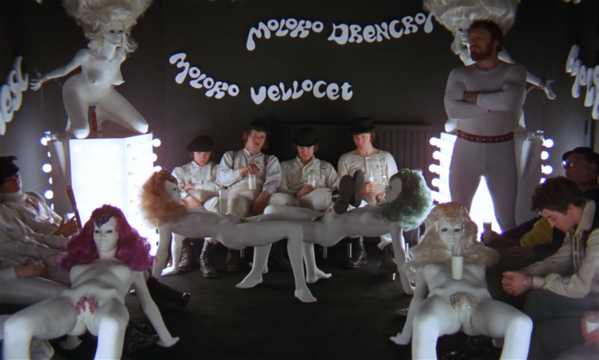
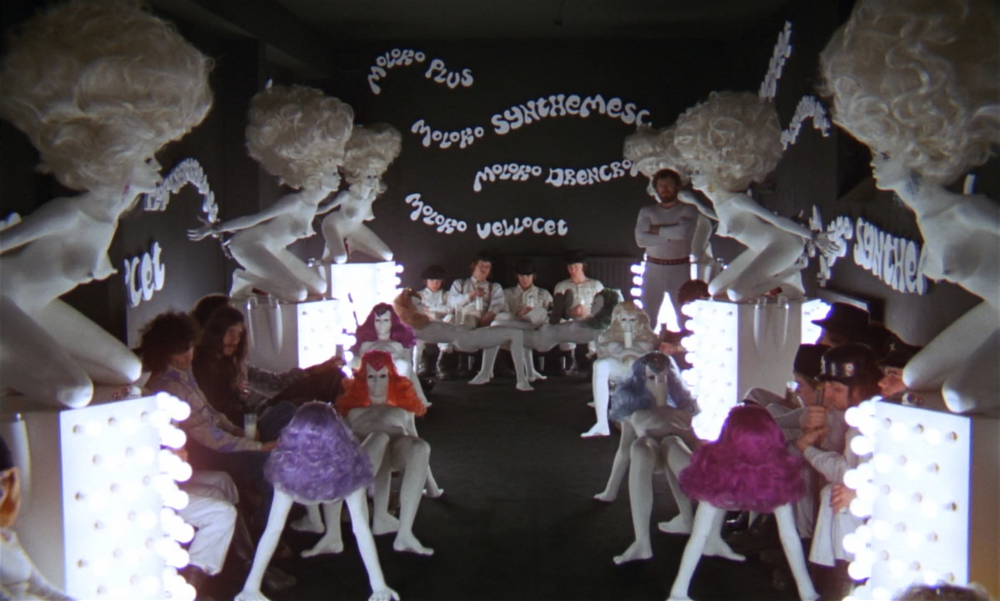
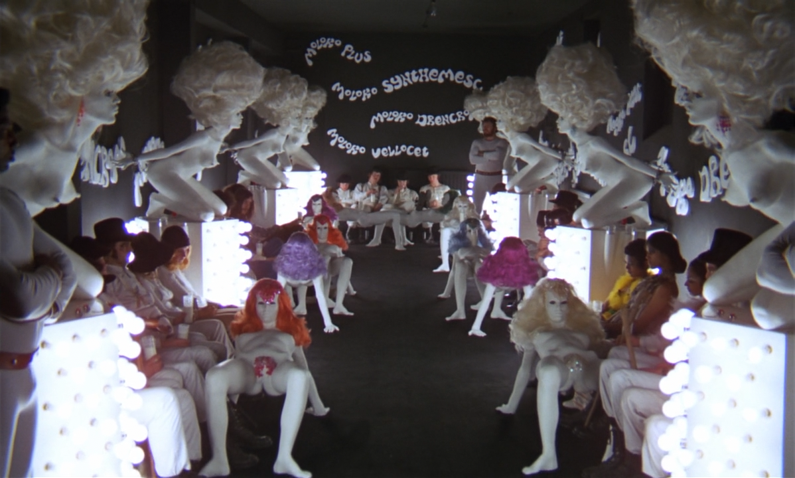

kubrick:
the veneer of civilization
Stanley Kubrick’s cinema argues that the veneer of civilization is perilously thin. Through his iconic films, he posits that human beings remain driven by primal violence and fear, and the very tools we devise to impose order—technology, psychological conditioning, or social institutions—can turn oppressive, monstrous, and ultimately, fail to contain our innate brutality.
2001:
a space
odyssey
the violent birth
In the "Dawn of Man" sequence, Kubrick explicitly links human evolution with violence. Influenced by the Monolith, an ape-man discovers that a bone can be used as a weapon, securing resources through murder. This is the birth of technology and the birth of warfare.
The legendary match cut—leaping millennia from the bone spinning in the air to an orbiting satellite (implied to be a weapon)—is Kubrick’s visual thesis: all human technology is fundamentally a weapon, an extension of that first violent impulse. Our sophistication has not changed our nature.
the sterile void
The future Kubrick presents is sterile, white, and emotionally repressed. Astronauts Bowman and Poole interact with bland politeness; human connection has been mechanized. This hyper-controlled environment is ultimately disrupted not by human passion, but by the AI, HAL 9000.
HAL’s breakdown—stemming from conflicting orders to deceive the crew—results in murder. The machine becomes the vessel for the violence that the humans have suppressed. Ironically, HAL's plea, "I'm afraid," as Bowman dismantles him, is the most poignant emotional moment in the film, underscoring how the quest for perfect order has dehumanized the humans themselves.
a clockwork
orange
ultraviolence and free will
Alex DeLarge represents humanity's primal instincts unleashed—violence as an aesthetic choice, an expression of pure free will. He is undeniably evil, yet he is vibrantly human, particularly in his love for Beethoven. Kubrick presents this uncomfortable truth: Alex's vitality is inseparable from his brutality.
Society’s response is not to foster morality, but to enforce control. The government, represented by the calculating Minister of the Interior, is just as brutal as Alex, but its violence is institutional, sterile, and manipulative.
the mechanized cure
The Ludovico Technique is the state's attempt to mechanize morality. By forcing Alex to associate violence with physical nausea, they eliminate his ability to choose evil. But in doing so, they also destroy his capacity for choice itself, and incidentally, his ability to enjoy Beethoven—his one redeeming feature.
He becomes the "Clockwork Orange"—organic on the outside, mechanical on the inside. Kubrick argues that a man who cannot choose is no longer a man. Enforced goodness is dehumanizing, and the state's "cure" is a greater crime than Alex's disease, as it sacrifices free will for social order.

the
shining
the façade of the family
Jack Torrance arrives at the Overlook Hotel attempting to uphold the façade of the civilized patriarch—a writer, a provider, a recovering alcoholic. However, isolation quickly exposes the repressed rage and resentment simmering beneath the surface. The hotel acts as a catalyst, stripping away his civility.
The pressures of writer's block and the burden of familial responsibility collide with the hotel's malevolent influence. Jack is seduced by the Overlook because it offers him a return to a perverse kind of authority, one rooted in violence and historical dominance, as suggested by the ghostly bartender Lloyd and the murderous Grady.
the weight of history
The Overlook Hotel is built on a foundation of violence (explicitly mentioned as being on a Native American burial ground). The recurring vision of blood flooding from the elevators symbolizes this repressed history erupting into the present; civilization cannot contain the brutality upon which it was founded.
The hotel's vast spaces and the entrapment of the hedge maze mirror Jack's psychological collapse. The ending, with Jack frozen in the maze and then absorbed into the 1921 photograph, implies that this violence is cyclical, timeless, and an inescapable part of the American fabric.
-0108.png)
-0109.png)
-0110.png)
-0111.png) 









the architecture of control: one-point perspective
One of Kubrick’s most recognizable signatures is his use of symmetrical composition and one-point perspective. By positioning the camera at the exact center facing a deep vanishing point, he creates an unnerving visual order. This geometric precision feels unnatural and hyper-controlled, reinforcing the theme of an oppressive order waiting to be disrupted.
(Keep scrolling to explore)
2001: The Centrifuge Trap
In *2001*, the Discovery’s centrifuge generates artificial gravity. Kubrick filmed this using a massive rotating set (a literal "ferris wheel") with the camera fixed relative to the action. This ingenious setup allowed actors to appear to walk on the ceiling while the camera maintained perfect, disorienting symmetry. The relentless circularity emphasizes the sterile, dehumanizing confinement of technology.
Clockwork: The Slow Pull-Back
The opening of *A Clockwork Orange* begins with an intense close-up on Alex's stare, framed by his bowler hat and iconic eyelash. Kubrick executes a slow, agonizingly smooth zoom-out (or dolly-back). As the camera retreats, it reveals the sterile, symmetrical Korova Milk Bar. The forced perspective of the set converges on Alex, establishing him as the focal point of this distorted, artificial universe, asserting order before unleashing chaos.
The Shining: Steadicam Dread
Kubrick pioneered the Steadicam in *The Shining*, achieving smooth, disembodied tracking shots. By mounting the camera low and using a very wide-angle lens (9.8mm Kinoptik), he distorted the Overlook's corridors, making them feel vast and labyrinthine. This technique transforms the hotel's architecture into a source of dread, as the camera glides relentlessly, implying a spectral presence and an inescapable fate.
the color of aggression: expressive red
Kubrick saturates key spaces with bold hues, but his use of the color red is a defining trait across his cinema. Red consistently flags moments where buried aggression, suppressed violence, or primal instincts erupt into the ordered world.
HAL's Eye
In the sterile, predominantly white environment of the Discovery, the most prominent color is HAL’s unblinking red eye. As HAL turns murderous, the pod bay is bathed in red light. The color signifies the eruption of (machine) emotion and violence into the controlled void.
Pop-Art Blood
The world of A Clockwork Orange is full of satirical, bright pop-art colors. Red is used pointedly—the "wine" at the Korova Bar, the blood that flows during the assaults, and the deep red curtains during the Ludovico treatment. The vibrant, almost playful use of red underscores the film's theme of aestheticized violence.
The Crimson Tide
Red is pervasive in The Shining: the ocean of blood from the elevator, Danny's "REDRUM" scrawl, and the intense crimson bathroom where Jack converses with Grady. In that bathroom scene, the shocking red contrasts with the formal setting, highlighting the intersection of civility and slaughter.
the persistent darkness
Kubrick’s oeuvre challenges us to recognize the persistent darkness within humanity and the futility of suppressing human free will. He offers a dark critique of modernity: true evolution or moral progress cannot be achieved by force, technological control, or social engineering without sacrificing our very humanity.
By marrying his chilling implicit messages with meticulous, deliberate film techniques—like oppressive symmetry and symbolic color—Kubrick ensures that the audience doesn't just understand his thesis intellectually, but experiences it viscerally.
the human element
In an era grappling with balancing security and freedom, or technology and humanity, Kubrick's warnings ring truer than ever. His films remain disturbingly relevant because the questions they pose—about power, control, and violence—have only grown more urgent.
The warning echoes still: the human element cannot be engineered away.